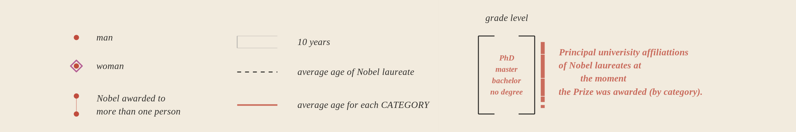

Setting the stage
The Nobel Prizes, awarded annually since 1901, honor extraordinary achievements in various fields, including Physics, Chemistry, Medicine, Literature, Peace, and Economic Sciences. These prestigious awards not only celebrate groundbreaking contributions but also reveal fascinating patterns and stories about the individuals who have shaped human progress.
This visualization delves into the journey of Nobel laureates over time, capturing the diversity of achievements and backgrounds that define these awards. It highlights trends in age at the time of recognition, the global origins and affiliations of the winners, and how different categories have evolved through the years. By examining these elements, the visualization provides a deeper understanding of the context in which these honors were awarded, the historical moments they reflect, and the enduring impact of the laureates work.
The decision to explore this graph was inspired by the intricate narratives it weaves, capturing the interplay of time, remarkable achievements, and the diverse tapestry of humanity. Through its depiction of Nobel laureates, the visualization illuminates the historical and personal contexts behind these prestigious awards, offering a window into the evolving legacy of innovation and excellence. It invites reflection on the profound stories hidden within the data, highlighting how visual exploration can bring to life the enduring impact of these extraordinary individuals.
For this visualization, Georgia Lupi, author of the original graph, took her inspiration from musical scores and their elegant aesthetics, especially John Cages source of fascinating contemporary scores. She visualized the evolution over time of the 6 prize categories, as colored musical scores along a skewed timeline.
Getting started
Libraries
This project utilizes a suite of libraries in R Studio to enable effective data manipulation and the creation of visually compelling graphs. These tools, including core visualization and supplementary packages, streamline workflows and enhance graphical outputs. Combining these libraries ensures a powerful and flexible approach to data visualization.
packages = c("tidyverse", "readr","dplyr", "ggplot2", "ggthemes", "ggforce",
"forcats", "ggtext", "patchwork", "ggalluvial")
package.check <- lapply(packages,
FUN = function(x){
if (!require(x,character.only = TRUE)){
install.packages(x,dependencies = TRUE)
library(x, character.only = TRUE)}})Some aesthetics
Additionally, the project incorporates carefully chosen fonts to complement the visualizations and enhance their aesthetic appeal. The selection of fonts ensures readability, consistency, and a professional finish, aligning with the overall design of the original graph.
sysfonts::font_add_google("Tinos", family="tinos") # for text
sysfonts::font_add_google("Gelasio", family="gl") #for numbers
sysfonts::font_add_google("EB Garamond", family="ebg") #for the final title
showtext::showtext_auto()Furthermore, we defined a vector (colors) mapping each category to a unique hex color code to differentiate the categories visually.
colors <- c (
"Chemistry" = "#C04C3D",
"Economic Sciences" = "#3F7383",
"Physics" = "#84AC6A",
"Literature" = "#B8963F",
"Physiology or Medicine" = "#7F3E48",
"Peace" = "#D47156")Data reconstruction
Obtaining the necessary data for this project posed significant challenges, as the original graph was published in a print newspaper and the sources employed in its creation were unknown. This lack of accessible and verifiable data required extensive effort to approximate and reconstruct the visualizations accurately. Nevertheless, we were able to identify a data set on Kaggle, a platform for data science and machine learning, containing most of the information needed.
The data set primarily consists of the years since the first Prize was awarded, the names of the laureates, their birth dates, hometowns, university affiliations, and other relevant information. However, it lacked information regarding the academic backgrounds of the laureates. This was subsequently obtained through a manual search, primarily referencing the biographies available on the official Nobel Prize website. In instances where such information was unavailable, alternative sources, including Wikipedia and the official websites of the relevant universities, were consulted.
Once the data was gathered, we moved forward with its processing. Given that the chart spans from 1901 to 2012, we focused on the data for these years. Although some laureates have been organizations, we decided to exclude these entries, as their inclusion would result in outlier values. We then selected the necessary variables to reproduce the graph accurately.
Once the data is selected, we will create a vector (cat) listing the six Nobel Prize categories. These will serve as a reference throughout the code. Then, using the factor category_labels we defined the same categories with their order explicitly specified. The tidy_nobels data frames category column is then coerced into a factor using the predefined cat vector. This ensures that the column values are treated as ordered categories, allowing logical sequencing in any resulting output.
cat <- c ("Chemistry", "Economic Sciences", "Physics", "Literature",
"Physiology or Medicine", "Peace")
category_labels <- factor(
c("Chemistry", "Economic Sciences", "Physics", "Literature",
"Physiology or Medicine", "Peace"),
levels = c("Chemistry", "Economic Sciences", "Physics", "Literature",
"Physiology or Medicine", "Peace"))
tidy_nobels$category <- factor(tidy_nobels$category, levels = cat)Reverse engineering
Shifting ages | Connected scatter plot
This initial representation is the most significant in the graph, showcasing a connected scatter plot where each dot represents a Nobel Laureate, positioned based on the year the prize was awarded and the Laureates age at the time. In other words, the display identifies the year of the prize on the x-axis, the winners ages on the y-axis.
The visualization highlights age trends within each category, offering a clear perspective on how these patterns evolve. Additionally, the plot provides indicators for the average age within each discipline and across all Laureates. Double-rounded dots are used to distinctly represent women, adding another layer of meaningful insight to the data.
To replicate this plot, we will need to, first, compute the age of each Laureate at the time of their award. For this action, we ensure that the birth_date variable is a date object for date-based calculations. Then, we create a new variable (age) by calculating the difference between the year the prize was awarded (awardYear) and the Laureates year of birth, extracted from the birth_date column.
tidy_nobels <- tidy_nobels |>
mutate(birth_date = as.Date(birth_date, format = "%Y-%m-%d")) |>
mutate(age = awardYear - as.numeric(format(birth_date, "%Y")))Next, we calculate the average age of Laureates for each category. The data is grouped by category, and the mean age is calculated within each group, ignoring any missing values. The resulting average age is rounded to the nearest whole number, and the grouping structure is removed to produce a simplified data frame.
As mention before, for each Nobel Prize category, the average age of the Laureates is visually represented with a horizontal line. The individual ages of the Laureates are shown as scatter points, connected by lines within each category to highlight trends over time. Female Laureates are specifically highlighted with distinct double-rounded markers, making them easy to identify within the plot.
To replicate this graph, we need to divide it into six distinct subplots, each corresponding to a specific category. This can be achieved using the facet_grid function, which enables the visualization of subsets of data within a single graph. By organizing the data in this way, we can facilitate a clearer and more effective comparison between categories.
Moreover, to have complete control over each of the elements of the graph, we will draw each of the components of the image: vertical reference lines in a 5-year interval helping the viewer navigate through time; horizontal grid lines at y-values representing different age benchmarks; dashed black line indicating the overall average age of all Laureates, etc. For this, we will combine geom_vline - for those vertical lines drawn at specific x-axis values- and annotate -to draw horizontal custom lines allowing us to specify the dimension of our lines- functions.
As mentioned earlier, the plot is created entirely from scratch.
By default, panel.grid.major.x allows us to differentiate between major and minor breaks within the plot. However, when adding the correspondent label to these breaks, it is not possible to add them to minor breaks. To achieve this, we construct different data frames each containing a set of years along with corresponding y-values. These years represent key milestones that will be annotated on the plot. Since the plot is divided into six subsets, we set Chemistry as the reference category to avoid duplicating annotations across the facets. This ensures that the annotations will only appear for the Chemistry category, which is positioned at the top of the plot. Additionally, we convert the category variable into a factor with defined levels to ensure the data is treated as a categorical variable with a consistent order.
#annotations: minor years
min.years_label <- data.frame(
x = c(1911, 1921, 1941, 1951, 1971, 1981, 2001),
y = 100,
label = c("1911", "1921", "1941", "1951", "1971", "1981", "2001"),
category = "Chemistry")
min.years_label$category <- factor(min.years_label$category,
levels = c("Chemistry", "Economic Science",
"Physics", "Literature",
"Physiology or Medicine", "Peace"))
#annotations: major years
maj.years_label <- data.frame(
x = c(1901, 1931, 1961, 1991, 2012),
y = 100,
label = c("1901", "1931", "1961","1991", "2012"),
category = "Chemistry")
maj.years_label$category <- factor(maj.years_label$category,
levels = c("Chemistry", "Economic Science",
"Physics", "Literature",
"Physiology or Medicine", "Peace"))On the other hand, similar problems arise with all the labels annotated at the y-axis of the plot. By default, when applying facet_grid , ggplot2 does not allow us to move independently each of the labels. Therefore, we create individual data frames for each of the three components needed on the y-axis: name of the category, average age within each category, and average among all the categories. This customization will allow us to determine manually each of the positions of the labels. We then combine this new information to the avg_age data by category .
#annotations: average age among all noble laureates
label_avg_laureate <- data.frame(
category = category_labels,
label_y = c(69, 56, 69, 59, 64, 60),
label_text = c("(59 years)", "(59 years)", "(59 years)", "(59 years)",
"(59 years)", "(59 years)"))
labels_avg_facets <- left_join(avg_age, label_avg_laureate, by = "category")
#annotations: average age per category
label_avg_cat <- data.frame(
category = category_labels,
label_y = c(45, 55, 45, 60, 42, 60),
label_text = c("57 years", "67 years", "55 years", "64 years", "57 years", "62 years"))
labels_avg_cat_facets <- left_join(avg_age, label_avg_cat, by = "category")
#annotation: name each category
label_cat <- data.frame(
category = category_labels,
label_y = c(70, 55, 70, 70, 55, 70),
label_text = c("CHEMISTRY", "ECONOMIC\nSCIENCES", "PHYSICS", "LITERATURE",
"PHYSIOLOGY\nOR MEDICINE", "PEACE"))For warranting a clear and focused visualization, the plot is designed with specific axis limits and annotation handling. This will help us to highlight the most relevant data points and trends, ensuring that the viewers attention is directed where it is most needed. By restricting both axis with coord_cartesian, we ensure that the data points are effectively displayed within a relevant context, without any unnecessary outliers. Additionally, all the text annotations previously created that appear outside the plot area are deliberately not clipped (clip = "off"). This design choice ensures that all labels are fully visible even if they extend beyond the plot boundaries. This helps to avoid any truncation or loss of important information,
Having built and settled all the essential components, the final code to generate the plot is as follows:
gp1 <- ggplot(tidy_nobels,aes(color = category)) +
#facet grid: divided plot into facets
facet_grid(category ~ ., switch = "y") +
#grid: minor vertical lines
geom_vline(xintercept = seq(1906, 2010, by = 5), linetype = "solid",
color = "#A6A9AC", linewidth = 0.4, alpha = 0.5) +
#grid: major vertical lines
geom_vline(xintercept = 1931, linetype = "solid", color = "#A6A9AC",
linewidth = 0.5) +
geom_vline(xintercept = 1961, linetype = "solid", color = "#A6A9AC",
linewidth = 0.5) +
geom_vline(xintercept = 1991, linetype = "solid", color = "#A6A9AC",
linewidth = 0.5) +
geom_vline(xintercept = 2012, linetype = "solid", color = "#A6A9AC",
linewidth = 0.5) +
#initial vertical color category line
geom_segment(aes(x = 1901, xend = 1901, y = 40, yend = 80, color = category),
linewidth = 0.8) +
#grid: horizontal lines
annotate("segment", x = 1901, xend = 2012, y = 40, yend = 40, color = "#B5B2AC",
linewidth = 0.2, alpha = 0.8) +
annotate("segment", x = 1901, xend = 2012, y = 50, yend = 50, color = "#B5B2AC",
linewidth = 0.2, alpha = 0.8) +
annotate("segment", x = 1901, xend = 2012, y = 60, yend = 60, color = "#B5B2AC",
linewidth = 0.2, alpha = 0.8) +
annotate("segment", x = 1901, xend = 2012, y = 70, yend = 70, color = "#B5B2AC",
linewidth = 0.2, alpha = 0.8) +
annotate("segment", x = 1901, xend = 2012, y = 80, yend = 80, color = "#B5B2AC",
linewidth = 0.2, alpha = 0.8) +
#average lines by category
annotate("segment", x = 1901, xend = 2012,
y = mean(tidy_nobels$age, na.rm = TRUE),
yend = mean(tidy_nobels$age, na.rm = TRUE),
color = "black", linewidth = 0.3, linetype = "dashed") +
geom_segment(data = avg_age, aes(x = 1901, xend = 2012,
y = avg_age, yend = avg_age,
color = category), linewidth = 0.5) +
#scatter points for each age and connections over time
geom_point(aes(awardYear, age, color = category), size = 1.5, alpha = 0.8) +
geom_line(aes(awardYear, age, color = category), lwd = .2) +
#highlighting female laureates
geom_point(data = filter(tidy_nobels, gender == "female"),
aes(x = awardYear, y = age), color = "#B55F94",
shape = 21, size = 3, stroke = 0.8) +
#custom colors
scale_color_manual(values = colors) +
#text annotations: years
geom_text(data = min.years_label, aes(x = x, y = y, label = label),
color = "#7F8082", size = 3, family = "gl", vjust = -1) +
geom_text(data = maj.years_label, aes(x = x, y = y, label = label),
color = "#707070", size = 3, fontface = "bold", family = "gl",
vjust = -1) +
#text annotations: average ages per category
geom_text(data = labels_avg_facets,
aes(x = 1898, y = label_y, label = label_text),
hjust = 1, vjust = 1, size = 2.5, color = "black", alpha= 0.8,
fontface = "bold",family = "gl") +
geom_text(data = labels_avg_cat_facets,
aes(x = 1898, y = label_y, label = label_text,fontface = "bold",
family = "gl"), hjust = 1, vjust = -0.8, size = 2.5, color = colors) +
#text annotations: category name
geom_text(data = label_cat,
aes(x = 1898, y = label_y, label = label_text,fontface = "bold",
family = "tinos"), hjust = 1, vjust = -0.8, size = 3,
color = colors, lineheight = 0.8) +
#styling and theme
theme_void() +
theme(
legend.position = "none",
panel.grid.major.x = element_blank(),
axis.text.y = element_blank(),
axis.text.x = element_blank(),
strip.text.y = element_blank(),
plot.background = element_rect(fill = "#f2ebde", color = NA),
panel.spacing = unit(0, "lines"),
plot.margin = margin(10,5,0,0, "mm")) +
labs(y = "", x = "") +
#axis and plot limits
coord_cartesian(xlim = c(1900, 2012), ylim = c(23, 92),
clip = "off", expand = 0)
gp1From dropouts to Phd | Barplot
The bars represent the relative percentage of each level of formal education each winner in that category obtained (from Phd to no degrees at all) highlighting how Laureates in Medicine, Physics, or Economic most of the time have a Phd, while the opposite is true for Literature and Peace where most of them dont even have a degree.
To analyze this, we select both categoryand academic_degree variables, isolating missing values for this second one. Data is then grouped by both variables and computed the number of Laureates for each combination. To facilitate meaningful interpretation, the academic_degree variable is transformed into an ordered factor, with levels arranged from no degree to PhD, reflecting a logical progression of educational attainment.
education <- tidy_nobels |>
select(category, academic_degree) |>
filter(academic_degree != "NA") |>
group_by(category, academic_degree) |>
summarise(count = n(), .groups = "drop") |>
mutate(academic_degree = factor(academic_degree,
levels = c("no degree", "bachelor", "master",
"PhD"), ordered = TRUE))As we did before, we divided the plot into facets, with each category displayed in its own horizontal bar chart. Horizontal grid lines are annotated for each academic level, aiding readability. The bars representing the counts of Laureates are styled with distinct colors corresponding to their categories, using the custom color palette per category previously established. Also, we remove unnecessary elements with a void theme and create custom annotation frames with clasps on either side to add structure. Finally, ggplot2 expects a continuous variable for the y-axis by default, but we are supplying a discrete factor, therefore we add scale_y_discrete to specify that the y-axis uses discrete values.
gp2 <- ggplot(education) +
#facet grid: divided plot into facets
facet_wrap(~category, ncol = 1) +
#grid: horizontal lines
annotate("segment", x = 0, xend = 140, y = 1, yend = 1, color = "black",
linewidth = 0.2, alpha = 0.8) +
annotate("segment", x = 0, xend = 140, y = 2, yend = 2, color = "black",
linewidth = 0.2, alpha = 0.8) +
annotate("segment", x = 0, xend = 140, y = 3, yend = 3, color = "black",
linewidth = 0.2, alpha = 0.8) +
annotate("segment", x = 0, xend = 140, y = 4, yend = 4, color = "black",
linewidth = 0.2, alpha = 0.8) +
#bars for each academic level
geom_col(aes(x = count, y = academic_degree, fill = category), alpha = 0.7) +
#custom colors
scale_fill_manual(values = colors) +
#styling and theme
theme_void() +
labs() +
theme(legend.position = "none",
panel.grid = element_blank(),
axis.text.x = element_blank(),
axis.title = element_blank(),
plot.background = element_rect(fill = "#f2ebde", color = NA),
strip.text = element_blank(),
panel.spacing = unit(1, "lines"),) +
#left clasp
annotate("segment", x = -5, xend = 5, y = -2, yend = -2, color = "black",
linewidth = 0.5) +
annotate("segment", x = -5, xend = 5, y = 7, yend = 7, color = "black",
linewidth = 0.5) +
annotate("segment", x = -5, xend = -5, y = -2, yend = 7, color = "black",
linewidth = 0.5) +
#right clasp
annotate("segment", x = 140, xend = 145, y = -2, yend = -2, color = "black",
linewidth = 0.5) +
annotate("segment", x = 140, xend = 145, y = 7, yend = 7, color = "black",
linewidth = 0.5) +
annotate("segment", x = 145, xend = 145, y = -2, yend = 7, color = "black",
linewidth = 0.5) +
#discrete values in y-axis
scale_y_discrete()
gp2Back to the roots | Stacked barplot
The chart below the main plot represent the most frequent hometowns out of the total, colored by category and aggregated per 30-years period eras. The color within each one corresponds to the prize category. Before plotting, we need to aggregate the data by era and filter the data to the specific cities.
First, we standardize the names of Nobel Laureates hometowns that will be part of the final plot for eliminating inconsistencies in the data set that might arise due to minor variations in how city names are recorded. Then, we customize the city order, stored in the city_order vector, to ensure consistent presentation in the visualization.
tidy_nobels <- tidy_nobels |>
mutate(
birth_cityNow = recode(birth_cityNow,
"Chicago, IL" = "Chicago",
"Washington, DC" = "Washington",
"New York" = "New York",
"Boston, MA" = "Boston",
"London" = "London",
"Paris" = "Paris",
"Munich" = "Munich",
"Vienna" = "Wien",
"Budapest" = "Budapest",
"Moscow" = "Moscow"))
city_order <- c("Washington", "Munich", "Moscow","Budapest", "Boston", "Berlin",
"Chicago", "Wien","London","Paris","New York")When observing the data in tidy_nobels, we see that New York is divided into two separate observations. For that reason, we combine entries into a unique value using the ifelse function. Then, we count the number of occurrences of each unique birth_cityNow which are sorted in descending order by frequency. Finally, as we only need the top 11 cities, we use the slice_head() function to just keep those unique values.
Next, we converted birth_cityNow into a factor with a defined order. This ordering ensures that the cities will be displayed in a predefined sequence (from Washington to New York) when used in any plots or analyses. The same is done in the dataset for ensuring the correct sequence.
Once we have the total number of laureates in each city, we will focus on how many there are in each era. For this, we select our original data frame and, as we did before, consolidate the city of New York. The dataset is then filtered to include only the cities from the topcities dataset, ensuring that only the most frequent cities, as identified earlier, are included in the analysis. We then create a new variable (era) containing the four different periods. By grouping the data by birth_cityNow, era, and category, we calculate the number of Nobel Laureates (people_count) for each city within each era and category using the summarise() function. Finally, we order the cities according to the previously defined distribution.
topcities_era <- tidy_nobels |>
mutate(birth_cityNow = ifelse(birth_cityNow %in% c("Brooklyn, NY", "New York, NY"),
"New York", birth_cityNow)) |>
filter(birth_cityNow %in% topcities$birth_cityNow) |>
mutate(era = case_when(awardYear < 1930 ~ 1901,
awardYear < 1961 ~ 1931,
awardYear < 1991 ~ 1961,
TRUE ~ 1991)) |>
group_by(birth_cityNow, era, category) |>
summarise(people_count = n(), .groups = "drop")
topcities_era <- topcities_era |>
mutate(birth_cityNow = factor(birth_cityNow, levels = city_order))For creating the stacked barplot, we will need to first determine the specific intervals that we are going to be using. These eras are structured by specifying both the starting and ending years for each period. The era column marks the year the era begins, while the start_year and end_year columns indicate the specific years that define each eras range. Incrementing the start_year by a couple of years will allow us to create this separated visual effect needed for the replication.
era_intervals <- data.frame(
era = c(1901, 1931, 1961, 1991),
start_year = c(1904, 1934, 1964, 1994),
end_year = c(1930, 1960, 1990, 2012))We now need to join our topcities_era data set with the era_intervals in order to merges the era duration data. To obtaining this duration, we subtract start_year from end_year for each era, providing the length of each historical period in years.
Next, by grouping the data by each city and the different eras we will create two new variables: one for the total number of Nobel Laureates for each era across all cities, and another that scales the duration of each era computing how much of the eras total duration should be allocated to each one
topcities_era <- topcities_era |>
left_join(era_intervals, by = "era") |>
mutate(era_duration = end_year - start_year)
topcities_era <- topcities_era |>
group_by(birth_cityNow, era) |>
mutate(
total_people_era = sum(people_count),
scaled_duration = (people_count / total_people_era) * era_duration)Having the start and end year, we can define the length of each category for each era and city. In order to do this, we establish a scaling factor (cm_per_unit), corresponding to one unit, that we multiplied for the total count of Laureates. This will indicate how much each city contributes to each era. With this new length, we compute the start position -subtracting the scaled_duration from the cumulative sum to avoiding overlapping- and the end position of each category in the visualization.
cm_per_unit <- 0.5
topcities_era <- topcities_era |>
group_by(birth_cityNow, era) |>
mutate(
scaled_duration = people_count * cm_per_unit,
start_year_scaled = start_year + (cumsum(scaled_duration) - scaled_duration),
end_year_scaled = start_year_scaled + scaled_duration) |>
ungroup()Up to now, we have calculated the total number of Laureates for each city and era, established their scaled duration, and computed their adjusted start and end years. With these processed data, we can start plotting our visualization.
gp3 <- ggplot(topcities_era, aes(y = birth_cityNow, color = category)) +
#grid: horizontal lines
annotate("segment", x = 1901, xend = 2015, y = topcities_era$birth_cityNow,
yend = topcities_era$birth_cityNow,
color = "#B5B2AC" , linewidth = 0.2, alpha = 0.05, linetype = "dotdash") +
#grid: eras vertical lines
geom_vline(xintercept = 1901, linetype = "solid", color = "#A6A9AC", linewidth = 0.5) +
geom_vline(xintercept = 1931, linetype = "solid", color = "#A6A9AC", linewidth = 0.5) +
geom_vline(xintercept = 1961, linetype = "solid", color = "#A6A9AC", linewidth = 0.5) +
geom_vline(xintercept = 1991, linetype = "solid", color = "#A6A9AC", linewidth = 0.5) +
geom_vline(xintercept = 2012, linetype = "solid", color = "#A6A9AC", linewidth = 0.5) +
#text annotations: years
annotate("text", x = 1901, y = 11, label = "1901", size = 3.5, color = "#707070",
vjust = -4, family = "gl", fontface = "bold") +
annotate("text", x = 1931, y = 11, label = "1931", size = 3.5, color = "#707070",
vjust = -4, family = "gl", fontface = "bold") +
annotate("text", x = 1961, y = 11, label = "1961", size = 3.5, color = "#707070",
vjust = -4, family = "gl", fontface = "bold") +
annotate("text", x = 1991, y = 11, label = "1991", size = 3.5, color = "#707070",
vjust = -4, family = "gl", fontface = "bold") +
annotate("text", x = 2012, y = 11, label = "2012", size = 3.5, color = "#707070",
vjust = -4, family = "gl", fontface = "bold") +
#category segment for each city and era
geom_segment(aes(x = start_year_scaled, xend = end_year_scaled,
yend = birth_cityNow), size = 3) +
#styling and theme
scale_color_manual(values = colors) +
theme_void() +
theme(
legend.position = "none",
plot.background = element_rect(fill = "#f2ebde", color = NA)) +
#text annotations: total laureates per city in each era
geom_text(
data = topcities_era |>
group_by(birth_cityNow, era) |>
filter(end_year_scaled == max(end_year_scaled)) |>
ungroup(),
aes(x = end_year_scaled, y = birth_cityNow, label = total_people_era),
color = "#7F8082", size = 2.5, fontface = "bold", hjust = -2, family = "gl",
inherit.aes = FALSE) +
#text annotations: total laureates per city
annotate("text", x = 2012 + 5, y = topcities$birth_cityNow,
label = topcities$n, size = 3,
color = "#7F8082", vjust = 0.5, hjust = 0,family = "gl", fontface = "bold") +
#text annotations: cities
annotate("text", x = 1899, y = topcities$birth_cityNow,
label = city_order,
size = 2.5, color = "black", alpha = 0.7, vjust = 0.5, hjust = 1,
family = "ebg", fontface = "bold.italic") +
#text annotations: legend
annotate("text", x = 2012 + 10, y = 10,
label = "total of \nlaureate \nfor each city",
size = 2.5, color = "black", alpha = 0.8, vjust = 0.5, hjust = 0,
family = "gl", fontface = "bold") +
annotate("text", x = 1888, y = 11,
label = "principal \nhometowns \nof laureates",
size = 2.5, color = "black",alpha = 0.8, vjust = 1, hjust = 1,
family = "gl", fontface = "bold") +
#axis and plot limits
coord_cartesian(xlim = c(1900, 2012), ylim=c(12, 0), clip="off", expand = 0 )
gp3Hubs of excellence | Sankey diagram
Throughout this Sankey diagram, each of the arcs represents the Laureates principal affiliations for each category and their distributions. The visualization shows how Chemistry (red), Physics (green), and Medicine (purple) are spread among the top 7 universities, while Literature and Peace Nobel Laureates (yellow and orange) clearly did not attend those schools.
This Sankey diagram was constructed by categorizing Nobel Laureates based on their principal affiliations and grouping the data to highlight the top seven universities: Harvard, MIT, Stanford, Caltech, Columbia, Cambridge, and Berkeley. Since affiliations often appear in varied forms, a crucial step is taken to standardize names. For instance, Massachusetts Institute of Technology (MIT) is simplified to MIT, and University of California becomes Berkeley, making the data consistent and easier to interpret. Moreover, to ensure accuracy, we filter out cases where an affiliation is labeled Berkeley but doesnt explicitly mention the institution in its original text. This step ensures that only genuine connections to Berkeley are retained.
Once the data is refined, the prize categories and the standardized affiliations are reordered to create the desired structure. Finally, we count the frequency of laureates for each combination of affiliation and prize category removing any incomplete entry leaving a clean dataset.
univ <- tidy_nobels |>
select(category, affiliation_1_bis, affiliation_1) |>
#clean and standardized universities names
mutate(affiliation_1_bis = case_match(
affiliation_1_bis,
"University of California" ~ "Berkeley",
"Harvard University" ~ "Harvard",
"Massachusetts Institute of Technology (MIT)" ~ "MIT",
"Stanford University" ~ "Stanford",
"University of Cambridge" ~ "Cambridge",
"California Institute of Technology (Caltech)" ~ "Caltech",
"Columbia University" ~ "Columbia")) |>
#filter California that are not Berkeley
filter(!(affiliation_1_bis == "Berkeley" & !grepl("Berkeley", affiliation_1))) |>
#reorder categories and affiliations
mutate(category = fct_relevel(category, "Chemistry", "Economic Sciences",
"Physics", "Literature", "Physiology or Medicine",
"Peace"),
affiliation_1_bis = fct_relevel(affiliation_1_bis, "Harvard", "MIT",
"Stanford", "Caltech", "Columbia",
"Cambridge", "Berkeley")) |>
#count frequencies
count(category, affiliation_1_bis) |>
#remove missing values
drop_na()First approach - parallel set
Once we have the clean data, we need to transform it into a format suitable for creating parallel sets plots. The first step involves reshaping the data with the gather_set_data function. The process takes each observation and organizes the combinations into individual rows representing combinations of categories and affiliations, making it possible to visualize the relationships between these levels. It creates new columns that represent the axis and a unique ID for each flow.
univ_data <- gather_set_data(univ, 1:2) The reshaped dataset is then used to create the plot with the gplot function, which positions the axes and specifies how to split the data and visualize the flows. Each flows width is proportional to the number of laureates in each category-affiliation combination. The geom_parallel_sets function draws the parallel sets on the plot, with the category aesthetic used to color the flows based on the Nobel prize category.
ggplot(univ_data,
aes(x = x, id = id, split = y, value = n)) +
geom_parallel_sets(aes(fill = category),
axis.width = 0.05, sep = 0.1) +
geom_parallel_sets_axes(axis.width = 0.001, fill = "black" , sep = 0.1) +
scale_fill_manual(values = colors) +
theme_void() +
theme(legend.position = "none",
plot.background = element_rect(fill = "#f2ebde", color = NA)) 
However, while geom_parallel_sets is useful, it offers limited flexibility for our specific needs: the separation parameter affects all categories equally, and it doesnt handle missing values well, making it difficult to include categories like Literature with NA value. It also does not allow us to manipulate the distribution of the flows making it nearly impossible for further alignment.
Second aproach - geom_flow. + NAs
To replicate the gaps observed in the original graph, the ggalluvial package in R is utilized to create alluvial diagrams, which are ideal for visualizing the flow of categorical data across multiple stages or variables. By representing the relationships and transitions between categories, alluvial plots provide a clear view of how data flows over time or between different groups. It also provides a more manageable format, allowing us to work directly with our dataset offering greater flexibility. In particular, it handles missing values (NAs) that dont get plotted but create space in the visualization. This feature will allow us to properly include categories like Literature and adjust padding as needed.
In order to be able to replicate the gaps observed in the original graph, we need to introduce artificial entries with missing values. This will be performed in two steps, first adding rows with missing affiliations and second, by adding rows to missing categories (bind_rows).
For this, we create a new row where the affiliation information is missing (NA) for selected prize categories. We only select a subset of categories, all except Chemistry - as is the top visualized category not needing extra values- and Literature - since it has no data at all, there is no need to artificially add gaps for this. We will then manually establish the number of laureates in each row to emulate the specific gaps in the original plot.
The same is done for the universities but, in this case, we just exclude the first university (Harvard) and the specific gaps are the same across all universities creating a clean alienation of the flows.
univ <- univ |>
#NAs to emulate the gaps in the categories (left side)
bind_rows(data.frame(
category = factor(levels(univ$category)[-c(1, 4)],
levels = levels(univ$category)),
affiliation_1_bis = NA,
n = c(27, 30, 77, 22) # different for each one (manually adjusted)
)) |>
# NAs to emulate the gaps in the universities (right side)
bind_rows(data.frame(
category = NA,
affiliation_1_bis = factor(levels(univ$affiliation_1_bis)[-1],
levels = levels(univ$affiliation_1_bis)),
n = 12 )) # same space for each one (manually adjusted)Once we have the required gaps created, we then focus on setting up and positioning the visual elements that connect Nobel Prize categories on the left side of the graph with the affiliations of laureates on the right side. The goal is to create segments that accurately reflect the number of laureates from each affiliation, while also ensuring the layout remains clean and visually balanced.
To begin, we defined the position of each categorys line on the left (lines_cat). For each one, we assign a position along the vertical axis ensuring they are evenly spaced. The (x) position is fixed, while the (y) position is calculated to place each category in an orderly sequence. This sequence of y values verifies that the categories are spaced out evenly (by=58) along the six distinct categories (length.out=6). Universities are presented in reverse ensuring that they are displayed in the correct order. We then set the end position of the segments (xend, yend), slightly extending the line vertically.
Next, we extract the lengths for the university segments on the right side based on the frequency of laureates for each affiliation (length_af). By grouping the data by affiliation and summing the number of laureates per institution, we generate a list of values that determine the length of each segment. The segments are then positioned at the right side of the graph connecting affiliations to the categories (lines_af). As before, the horizontal axis is fixed, while the vertical axis position is calculated similarly to the left side, but with slight adjustments to ensure that the affiliations dont overlap.
With the aim of preventing visual clutter while maintaining consistency and maintaining balance in the graph, we create a fake affiliation (ZZZ) to the dataset. This placeholder does not represent any real institution but is used solely for layout purposes. It introduces a gap at the bottom of the affiliations section, preventing overcrowding and ensuring that the graph maintains a neat structure. The fake affiliation is added with a manually adjusted count of 20 laureates.
#category lines (left side)
lines_cat <- data.frame(
x = 0.98, y = seq(-37, by=58, length.out=6),
category = factor(rev(levels(univ$category)), levels(univ$category))) |>
mutate(xend = x, yend = y + 40)
#length of the university affiliations (right side)
length_af <- univ |> drop_na() |>
group_by(affiliation_1_bis) |>
summarise(n = sum(n)) |>
pull(n) |>
rev()
#affiliation lines (right side)
lines_af <- data.frame(
x = 2.02, y = seq(20, by=29, length.out=7) +
c(0, -1, -1, -2, -3, -2, -1), # base adjustment
affiliation_1_bis = factor(rev(levels(univ$affiliation_1_bis)),
levels(univ$affiliation_1_bis))) |>
mutate(xend = x, yend = y + length_af)
#"fake" affiliation to create space at the end
levels(univ$affiliation_1_bis) <- c(levels(univ$affiliation_1_bis), "ZZZ")
univ <- bind_rows(univ, data.frame(
category = NA,
affiliation_1_bis = factor("ZZZ", levels=levels(univ$affiliation_1_bis)),
n = 20)) # manually adjusted After having all the calculations and positions of each element of the graph, we proceed to make the plot.
By using ggalluvial::geom_flowfunction we create flows between the categories (on the left) and affiliations (on the right). These flows are colored according to the Nobel categories color palette. Then, with thegeom_segment function we draw the vertical segments on the left, connecting each Nobel Prize category to the flow lines. Similarly, right-side segments are created to link affiliations to the flow lines. We also add the affiliation names next to each segment.
Finally, as done before, to ensure a correct alignment with the other graphs once we combined them all, we settle the plot limits as the previous graphs.
gp4 <- ggplot(univ) +
#flow between categories
geom_flow(aes(axis1 = category, axis2 = affiliation_1_bis, y = n,
fill = category), width = 0, alpha=1) + #warnings can be ignored
scale_fill_manual(values = colors) +
#left segments
geom_segment(aes(x=x, xend=xend, y=y, yend=yend, color=category), lines_cat,
size=0.8) +
scale_color_manual(values = colors) +
#right segments
geom_segment(aes(x=x, xend=xend, y=y, yend=yend), color="#555", lines_af, size=0.8) +
geom_text(aes(x = x + 0.08, y = y, label = affiliation_1_bis), lines_af, hjust=0,
vjust=0, size=3, family = "ebg", fontface = "bold.italic", alpha = 0.8) +
#styling and theme
theme_void() +
theme(
legend.position = "none",
plot.background = element_rect(fill = "#f2ebde", color = NA),
strip.text.y = ggtext::element_markdown(size = 8, face = "bold", hjust = 1,
vjust = 0.8)) +
#axis and plot limits
coord_cartesian(xlim=c(1, 2.5), ylim=c(-25, 280))
gp4Graphical Symbiosis - final result
Having all our graphs individually created, its time to assemble all the parts. In this process, first, we create a colored_spacer, which serves as a visual separator between the plots. Then, we arrange the individual plots (gp1, gp2, gp3, and gp4) along with the spacers into different rows, adjusting their widths and margins to ensure everything is properly spaced and aligned. Finally, we combine all the rows into a single layout, adjusting their heights to create the desired proportions and visual flow.
colored_spacer <- plot_spacer() +
theme(plot.background = element_rect(fill = "#f2ebde", color = NA))
row1 <- (colored_spacer + gp1 + gp2 + gp4 + colored_spacer) +
plot_layout(widths = c(4, 20, 1.5, 4.5, 0.5)) +
theme(plot.margin = margin(20, 0, 30, 0))
row2 <- (colored_spacer + gp3 + colored_spacer) +
plot_layout(widths = c(1.02, 5, 1.71)) +
theme(plot.margin = margin(0, 0, 0, 0))
row3 <- colored_spacer
final_plot <- (row3 / row1 / row2 / row3) +
plot_layout(heights = c(0.05, 1, 0.5, 0.05)) +
theme(
plot.background = element_rect(fill = "#f2ebde", color = NA))
final_plotBeyond the mirror
To optimize the current visualization for better clarity and user engagement, several modifications can be considered. These adjustments would not only enhance the overall aesthetic appeal but also improve how the data is presented and understood by the audience.
Visual Glossary
As you can see, the original plot presents a legend, which plays a crucial role in helping viewers understand the different categories, variables, or groups represented in the visualization. The legend serves as a guide, ensuring that the meaning of each color, shape, or size used in the plot is clear and easily interpreted.
However, while the legend is helpful, there may be opportunities to refine its design or placement to improve its clarity and integration with the overall plot. Therefore, we have created a minimalist legend showing all the necessary elements to read and understand the visualization.
legend <- ggplot(tidy_nobels) +
#fake vertical grid lines
geom_vline(xintercept = seq(1906, 1910, by = 5), linetype = "solid",
color = "#A6A9AC", linewidth = 0.4, alpha = 0.01) +
#fake horizontal grid lines
annotate("segment", x = 1901, xend = 1910, y = 60, yend = 60, color = "#B5B2AC",
linewidth = 0.2, alpha = 0.01) +
annotate("segment", x = 1901, xend = 1910, y = 70, yend = 70, color = "#B5B2AC",
linewidth = 0.2, alpha = 0.01) +
annotate("segment", x = 1901, xend = 1910, y = 80, yend = 80, color = "#B5B2AC",
linewidth = 0.2, alpha = 0.01) +
#gender points
annotate("point", x = 1901.5, y = 74.75, color = "#C04C3D", size = 2) +
#woman
annotate("point", x = 1901.5, y = 70, color = "#C04C3D", size = 2) +
annotate("point", x = 1901.5, y = 70, color = "#B55F94", size = 4, shape = 23,
stroke = 1) +
#gender labels
annotate("text", x = 1901.75, y = 74.75, label = "man",
size = 3.5, color = "black", alpha = 0.8, vjust = 0.5, hjust = 0,
family = "tinos", fontface = "italic") +
annotate("text", x = 1901.75, y = 70, label = "woman",
size = 3.5, color = "black", alpha = 0.8, vjust = 0.5, hjust = 0,
family = "tinos", fontface = "italic") +
#double points
annotate("point", x = 1901.5, y = 65, color = "#C04C3D", size = 2) +
annotate("point", x = 1901.5, y = 62, color = "#C04C3D", size = 2) +
annotate("segment", x = 1901.5, xend = 1901.5, y = 62, yend = 65,
color = "#C04C3D", linewidth = 0.2, alpha = 0.8)+
annotate("text", x = 1901.75, y = 63.5,
label = "Nobel awarded to \nmore than one person",
size = 3.5, color = "black", alpha = 0.8, vjust = 0.5, hjust = 0,
family = "tinos", fontface = "italic") +
#10 years lines
annotate("segment", x = 1903.5, xend = 1904, y = 75, yend = 75,
color = "#B5B2AC", linewidth = 0.2, alpha = 0.8) +
annotate("segment", x = 1903.5, xend = 1904, y = 73, yend = 73,
color = "#B5B2AC", linewidth = 0.2, alpha = 0.8) +
annotate("segment", x = 1903.5, xend = 1903.5, y = 75, yend = 73,
color = "#B5B2AC", inewidth = 0.2, alpha = 0.8) +
annotate("text", x = 1904.25, y = 74,
label = "10 years",
size = 3.5, color = "black", alpha = 0.8, vjust = 0.5, hjust = 0,
family = "tinos", fontface = "italic") +
#avg dash line
annotate("segment", x = 1903.5, xend = 1904, y = 69, yend = 69, color = "black",
linewidth = 0.5, alpha = 0.8, linetype = "dashed") +
annotate("text", x = 1904.25, y = 69,
label = "average age of Nobel laureate",
size = 3.5, color = "black", alpha = 0.8, vjust = 0.5, hjust = 0,
family = "tinos", fontface = "italic") +
#avg line
annotate("segment", x = 1903.5, xend = 1904, y = 63.5, yend = 63.5,
color = "#C04C3D", linewidth = 0.8, alpha = 0.8) +
annotate("text", x = 1904.25, y = 63.5,
label = "average age for each CATEGORY",
size = 3.5, color = "black", alpha = 0.8, vjust = 0.5, hjust = 0,
family = "tinos", fontface = "italic") +
#academic degree
annotate("segment", x = 1906.5, xend = 1906.7, y = 75, yend = 75, color = "black",
linewidth = 0.5, alpha = 0.8) +
annotate("segment", x = 1906.5, xend = 1906.7, y = 62, yend = 62, color = "black",
linewidth = 0.5, alpha = 0.8) +
annotate("segment", x = 1906.5, xend = 1906.5, y = 62, yend = 75, color = "black",
linewidth = 0.5, alpha = 0.8) +
annotate("text", x = 1906.85, y = 68.5,
label = "PhD \nmaster \nbachelor \nno degree",
size = 3, color = "#C04C3D", alpha = 0.8, vjust = 0.5, hjust = 0.5,
family = "tinos", fontface = "bold.italic") +
annotate("segment", x = 1907, xend = 1907.2, y = 75, yend = 75, color = "black",
linewidth = 0.5, alpha = 0.8) +
annotate("segment", x = 1907, xend = 1907.2, y = 62, yend = 62, color = "black",
linewidth = 0.5, alpha = 0.8) +
annotate("segment", x = 1907.2, xend = 1907.2, y = 62, yend = 75, color = "black",
linewidth = 0.5, alpha = 0.8) +
annotate("text", x = 1906.85, y = 78,
label = "grade level",
size = 3.5, color = "black", alpha = 0.8, vjust = 0.5, hjust = 0.5,
family = "tinos", fontface = "italic") +
#universities
annotate("segment", x = 1907.3, xend = 1907.3, y = 74, yend = 72, color = "#C04C3D",
linewidth = 2, alpha = 0.8) +
annotate("segment", x = 1907.3, xend = 1907.3, y = 71.9, yend = 68, color = "#C04C3D",
linewidth = 2, alpha = 0.8) +
annotate("segment", x = 1907.3, xend = 1907.3, y = 67.9, yend = 65, color = "#C04C3D",
linewidth = 2, alpha = 0.8) +
annotate("segment", x = 1907.3, xend = 1907.3, y = 64.9, yend = 64, color = "#C04C3D",
linewidth = 2, alpha = 0.8) +
annotate("segment", x = 1907.3, xend = 1907.3, y = 63.5, yend = 63, color = "#C04C3D",
linewidth = 2, alpha = 0.8) +
annotate("text", x = 1907.5, y = 69,
label = "Principal univerisity affiliattions \nof Nobel laureates at
the moment \nthe Prize was awarded (by category).",
size = 3.5, color = "#C04C3D", alpha = 0.8, vjust = 0.5, hjust = 0,
family = "tinos", fontface = "bold.italic") +
#styling and theme
theme_void() +
theme(
legend.position = "none",
panel.grid.major.x = element_blank(),
axis.text.y = element_blank(),
axis.text.x = element_blank(),
strip.text.y = element_blank(),
plot.background = element_rect(fill = "#f2ebde", color = NA)) +
labs(y = "", x = "")
legend
Headline
Also, having a title in visualization is important because it provides immediate context and orientation to the viewer. It helps set the tone and clarifies the purpose of the plot, allowing the audience to quickly grasp the topic or focus of the data. The author attribution is also included in this step.
graph_title <- ggplot(tidy_nobels) +
#fake vertical grid lines
geom_vline(xintercept = seq(1906, 1908, by = 5), linetype = "solid", color = "#A6A9AC",
linewidth = 0.4, alpha = 0.01) +
##fake horizontal grid lines
annotate("segment", x = 1906, xend = 1908, y = 50, yend = 50, color = "#B5B2AC",
linewidth = 0.2, alpha = 0.01) +
annotate("segment", x = 1906, xend = 1908, y = 60, yend = 60, color = "#B5B2AC",
linewidth = 0.2, alpha = 0.01) +
annotate("segment", x = 1906, xend = 1908, y = 70, yend = 70, color = "#B5B2AC",
linewidth = 0.2, alpha = 0.01) +
annotate("segment", x = 1906, xend = 1908, y = 80, yend = 80, color = "#B5B2AC",
linewidth = 0.2, alpha = 0.01) +
#title label
annotate("text", x = 1906.4, y = 65,
label = "Nobels, no degrees",
size = 11, color = "#4e0041", alpha = 0.8, vjust = 0.5, hjust = 0,
family = "ebg", fontface = "italic") +
#author label
annotate("text", x = 1906.4, y = 45,
label = "Author: Andrea Rivera Mateos (2025) \nSource: Source: Nobel Prize Official Website and own eleaboration",
size = 3, color = "black", alpha = 0.8, vjust = 0.5, hjust = 0,
family = "ebg", fontface = "italic") +
#styling and theme
theme_void() +
theme(
legend.position = "none",
panel.grid.major.x = element_blank(),
axis.text.y = element_blank(),
axis.text.x = element_blank(),
strip.text.y = element_blank(),
plot.background = element_rect(fill = "#f2ebde", color = NA)) +
labs(y = "", x = "") +
coord_cartesian(clip="off", expand = 0 )
graph_titleStrengthening Womens Presence
Finally, upon examining the data, it is evident that only 44 Laureates are women. In the original graph, this distinction is marked by a double-rounded dot. However, since ages are also represented using points regardless of gender, we believe that adopting a more distinctive shape, such as a diamond, better highlights and draws attention to the significant role of women in the history of the awards. To implement this change, we reused the existing code but modified the `geom_point shape to 23, which corresponds to a diamond.
gp1 <- ggplot(tidy_nobels,aes(color = category)) +
geom_vline(xintercept = seq(1906, 2010, by = 5), linetype = "solid", color = "#A6A9AC",
linewidth = 0.4, alpha = 0.5) +
geom_vline(xintercept = 1931, linetype = "solid", color = "#A6A9AC", linewidth = 0.5) +
geom_vline(xintercept = 1961, linetype = "solid", color = "#A6A9AC", linewidth = 0.5) +
geom_vline(xintercept = 1991, linetype = "solid", color = "#A6A9AC", linewidth = 0.5) +
geom_vline(xintercept = 2012, linetype = "solid", color = "#A6A9AC", linewidth = 0.5) +
geom_segment(aes(x = 1901, xend = 1901, y = 40, yend = 80, color = category), linewidth = 0.8) +
annotate("segment", x = 1901, xend = 2012, y = 40, yend = 40, color = "#B5B2AC",
linewidth = 0.2, alpha = 0.8) +
annotate("segment", x = 1901, xend = 2012, y = 50, yend = 50, color = "#B5B2AC",
linewidth = 0.2, alpha = 0.8) +
annotate("segment", x = 1901, xend = 2012, y = 60, yend = 60, color = "#B5B2AC",
linewidth = 0.2, alpha = 0.8) +
annotate("segment", x = 1901, xend = 2012, y = 70, yend = 70, color = "#B5B2AC",
linewidth = 0.2, alpha = 0.8) +
annotate("segment", x = 1901, xend = 2012, y = 80, yend = 80, color = "#B5B2AC",
linewidth = 0.2, alpha = 0.8) +
annotate("segment", x = 1901, xend = 2012,
y = mean(tidy_nobels$age, na.rm = TRUE), yend = mean(tidy_nobels$age, na.rm = TRUE),
color = "black", linewidth = 0.3, linetype = "dashed") +
geom_segment(data = avg_age, aes(x = 1901, xend = 2012,
y = avg_age, yend = avg_age,
color = category), linewidth = 0.5) +
geom_point(aes(awardYear, age, color = category), size = 1.5, alpha = 0.8) +
geom_line(aes(awardYear, age, color = category), lwd = .2) +
#new shape for women (diamond shape = 23)
geom_point(data = filter(tidy_nobels, gender == "female"),
aes(x = awardYear, y = age), color = "#B55F94",
shape = 23, size = 3, stroke = 0.8) +
facet_grid(category ~ ., switch = "y") +
scale_color_manual(values = colors) +
geom_text(data = min.years_label, aes(x = x, y = y, label = label), color = "#7F8082",
size = 3.5, family = "gl", vjust = -1) +
geom_text(data = maj.years_label, aes(x = x, y = y, label = label), color = "#707070",
size = 3.5, fontface = "bold", family = "gl", vjust = -1) +
geom_text(data = labels_avg_facets, #avg_cat (59)
aes(x = 1898, y = label_y, label = label_text),
hjust = 1, vjust = 1, size = 2.5, color = "black", alpha= 0.8,
fontface = "bold",family = "gl") +
geom_text(data = labels_avg_cat_facets,
aes(x = 1898, y = label_y, label = label_text,fontface = "bold", family = "gl"),
hjust = 1, vjust = -0.8, size = 2.5, color = colors) +
geom_text(data = label_cat,
aes(x = 1898, y = label_y, label = label_text,fontface = "bold", family = "tinos"),
hjust = 1, vjust = -0.8, size = 3, color = colors, lineheight = 0.8) +
theme_void() +
theme(
legend.position = "none",
panel.grid.major.x = element_blank(),
axis.text.y = element_blank(),
axis.text.x = element_blank(),
strip.text.y = element_blank(),
plot.background = element_rect(fill = "#f2ebde", color = NA),
panel.spacing = unit(0, "lines"),
plot.margin = margin(10,5,0,0, "mm")) +
labs(y = "", x = "") +
coord_cartesian(xlim = c(1900, 2012), ylim = c(23, 92), clip = "off", expand = 0)
gp1Chronicle of data - final plot
Included all the improvements, the final graph will be as follow:
colored_spacer <- plot_spacer() +
theme(plot.background = element_rect(fill = "#f2ebde", color = NA))
row1 <- (colored_spacer + gp1 + gp2 + gp4 + colored_spacer) +
plot_layout(widths = c(3.5, 15, 1, 4.5, 0.5)) +
theme(plot.margin = margin(10, 0, 30, 0))
row2 <- (colored_spacer + gp3 + colored_spacer) +
plot_layout(widths = c(1.03, 4.41, 1.85)) +
theme(plot.margin = margin(0, 0, 0, 0))
row3 <- (graph_title + legend) +
plot_layout(widths = c(3, 4)) +
theme(plot.margin = margin(25, 0, 15, 0))
final_plot <- (colored_spacer / row1 / row2 /row3 ) +
plot_layout(heights = c(0.05, 1, 0.5, 0.25)) &
theme(
plot.background = element_rect(fill = "#f2ebde", color = NA))
final_plot